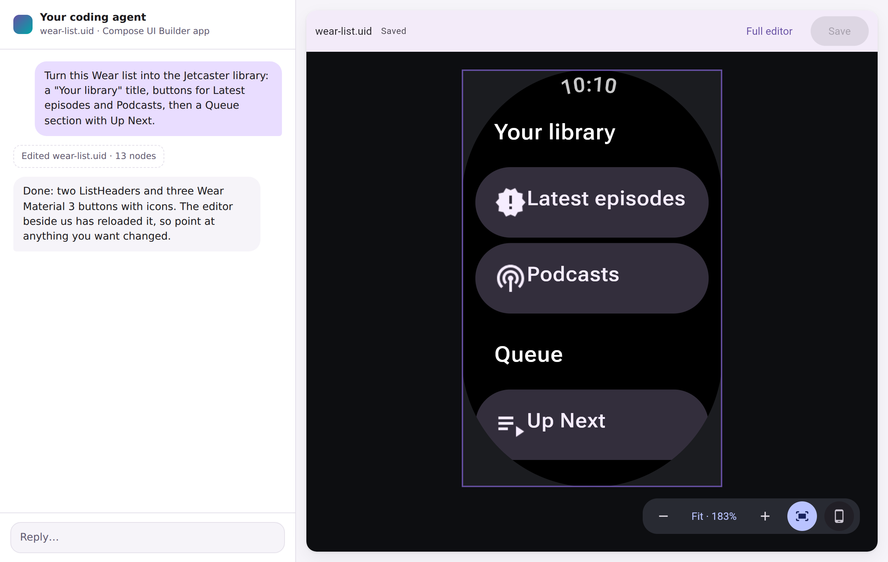
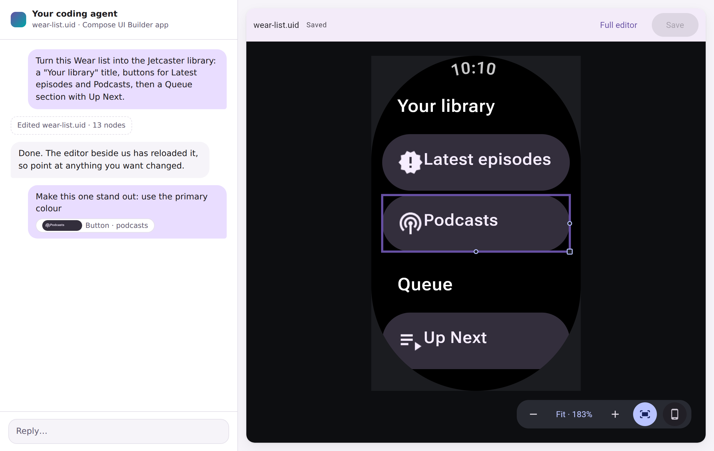
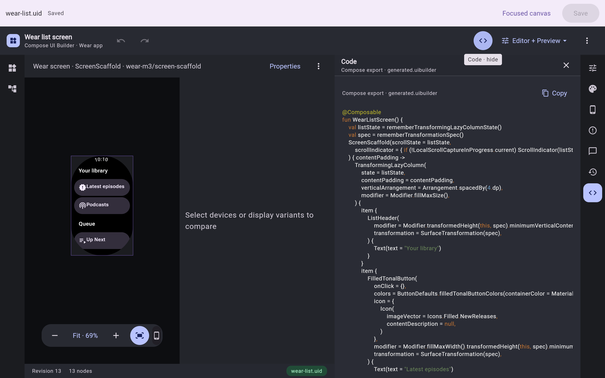

Real components, not mockups
The canvas renders compiled Material 3 and Wear Material 3 composables. What you see is what Compose draws.
For Jetpack Compose & Compose Multiplatform
A visual editor for real, compiled Compose components that works hand in hand with your coding agent. Three steps from idea to Compose code you can ship:

Pick a Wear list screen, a phone scaffold or a Wear widget. It opens as a .uid design file you keep in git.

Describe the screen in plain words. The agent edits the design and the open editor reloads as the file changes.

Right-click anything and comment. Your note lands in the chat with that exact node attached.
The agent works on the same saved design you see. Every pixel on the canvas is drawn by Compose itself, and the export is the Kotlin that draws it.

Connect your agent to the hosted Compose Preview MCP server. The first call asks you to approve access in your browser; designs stay private to you and the people you share them with.
Add the server once:
claude mcp add --transport http compose-preview https://preview.coo.ee/mcpAlready have a token? Pass it as a header to skip the approval step:
claude mcp add --transport http compose-preview https://preview.coo.ee/mcp \
--header "X-Compose-Preview-Token: $COMPOSE_PREVIEW_TOKEN"Add this to ~/.codex/config.toml:
[mcp_servers.compose-preview]
url = "https://preview.coo.ee/mcp"Any client that speaks Streamable HTTP MCP works. For Cursor, add to
.cursor/mcp.json; most other clients use the same shape:
{
"mcpServers": {
"compose-preview": {
"type": "http",
"url": "https://preview.coo.ee/mcp"
}
}
}Then try this prompt:
Create a Wear OS design from the wear-list template in the Compose UI Builder,
turn it into a podcast library with "Latest episodes" and "Podcasts" buttons,
and give me a link to open it.The canvas renders compiled Material 3 and Wear Material 3 composables. What you see is what Compose draws.
Browser, IDE and agent edits all go through one revisioned design, so changes arrive live wherever it is open.
Comments carry the node, its properties and a picture into the chat. No more describing which button you mean.
Get idiomatic Kotlin that calls real components, or your own project's composables when you point it at your module.
Design adaptive phone and tablet screens, Wear OS screens, and Wear widgets built on Remote Compose.
A design is a .uid file. Review it in a pull request with rendered before/after images, not JSON diffs.
Export any saved revision as SVG for design review, pinned to the exact catalog it was built with.
Web, a native desktop app, an IntelliJ tool window, or inside your agent's chat as an MCP App.
